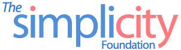

 |
|
|---|---|
About us The complete name of the foundation is: The Simplicity Foundation was founded in November 2008, by way of extending the idea and the activities of the WrocławWeekly project. WrocławWeekly (a.k.a. WroclawWeekly.pl) is a not-for-profit and non-commercial Wrocław multimedia news portal project and operated by Toyotaka Ota since August 2005. Toyotaka Ota started the WrocławWeekly project in order to promote Wrocław local cultural events to non-Polish public, and every week we publish event information and schedule in English and we also make easy-to-print summary available in PDF. Over the years, WrocławWeekly worked with many cultural institutions in Wrocław and built a network of partnership, but as its activities become more involved both with the local cultural scene and with the target non-Polish communities, we started to see our limitation as WrocławWeekly qua news portal. The Simplicity Foundation was conceived in order to extend the idea and the possibilities of the WroclawWeekly project beyond its current form and to reach and help more diverse public: the scope has been expanded from local cultural information to include general local life information, and information will be provided not only in English but in as many languages as there is a demand. Furthermore, in co-operation with local cultural institutions and independent artist groups, we can now also produce and organize our own cultural events for the purpose of international and/or intercultural promotion of Wrocław and its city life. Current activities of the Simplicity Foundation include:
Who we are Dr. Toyotaka Ota Kamila Ota-Kozik
|
|